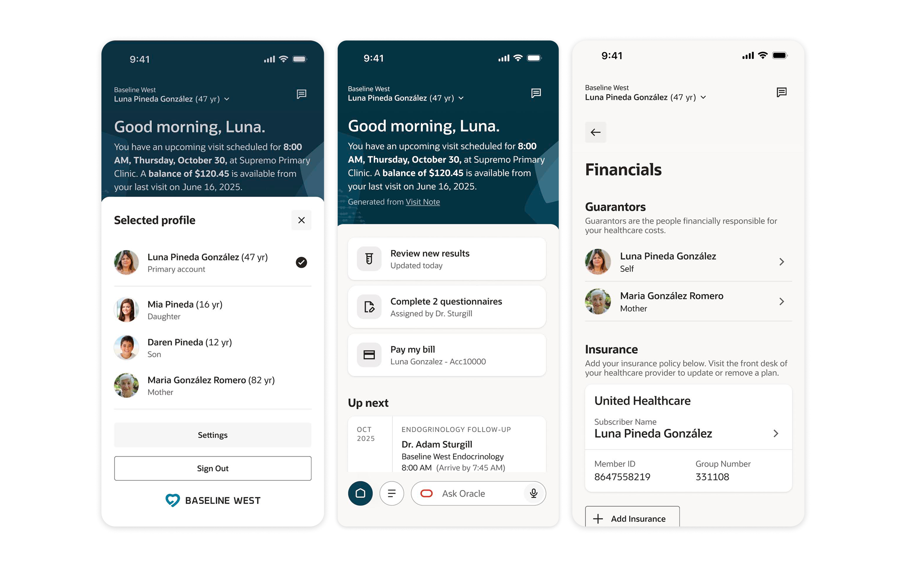

Launching a patient portal that's engaging, action-oriented, and easy to understand.
- Timeline
- Oct 2025 – present, 4 months to GA
- Role
- UX Designer II
- Team
- Oracle Health Design
- Skills
- Product strategy, interaction design, systems thinking, Figma, Codex & VS Code

The Problem
How might we empower patients to understand and orchestrate their own care?
The Solution
With a tailored dash serving the user exactly what they need, when they need it.
Context
After my recruitment to this new project, we made it from 0 to launch in under 4 months! I was responsible for the home dashboard, messaging, and settings/account management.
month 1
month 2
month 3
month 4
GA launchon the App Store
- <4 mo zero to launch
- 13 users validated my proxy messaging model
- 100% design parity at GA
Problems I owned
Over the year I've worked on this project, I progressed from an individual designer, responsible for home and settings only, to one of two lead designers for the product, owning half of all features and building the framework and design system.
- Implementing an effective home dashboard and proactive care engine
- Profile-switching framework for medical proxies
- Secure messaging with conflicting patient and clinician goals
- Working closely with dev to ship our brand new design system fast, with quality assurance
Full case study details are available on request. But please,
Check us out in the App Store ↗